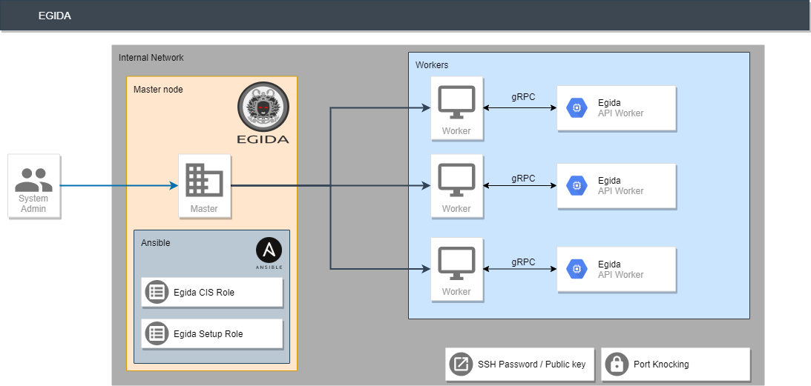
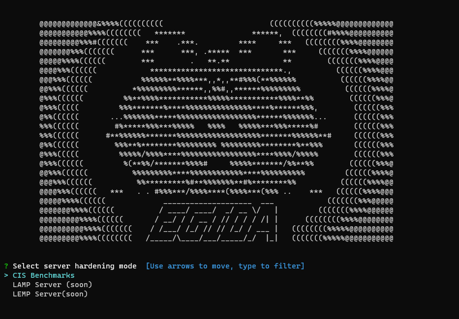
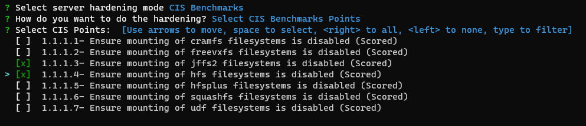

Egida Project
Table of Contents
- Overview
- Installation
- Prerequisites
- Download and install
- Getting Started
- Environment SetUp
- Add Host
- Variables
- Hardening
- All CIS Benchmarks
- CIS Points
- CIS Sections
- CIS Controls
- Getting Info
- Lynis Score
- Machine Info
- License
- Contact
Overview
The Egida project is a server orchestration system that allows to perform and deploy security configurations (custom control lists) over a machine infrastructure. These security configurations can shield and protect those servers by implementing the desired security measures depending on the server profile. Controls are sourced from the CIS Benchmarks, and we also need to obtain system information about each of the deployed servers to ensure proper deployment.
To achieve that, Egida is built using a microservices-based architecture composed of the following three modules:
-
egida: This is the main module, in charge of providing the communication interfaces with the user, as well as the process of the specific domain language called Aspida. Using this module, the user can define the different profiles to work with and the actions to be performed.
-
egida-roles: This module contains the definition of the Ansible roles that contains the actions corresponding to the security controls that are defined for each profile that a machine may have assigned. These actions can be either hardening operations (CIS Benchmarks) or setup actions to prepare that machine so it can be used correctly by Egida.
-
egida-api: The functionality of this module is to provide information of each machine to be used by Egida. This information can be varied: the services that are currently running, the operating system version or the score obtained with the Lynis tool… any kind of information that we determine it is interesting to better deploy any security control.

Installation
Prerequisites
Egida v1.0.0 requires the following software to be installed on the master node:
Currently, Egida v1.0.0 needs an Ubuntu >=18.04 LTS OS.
- Ansible >2.8: Install Ansible
sudo apt update
sudo apt install software-properties-common
sudo apt-add-repository --yes --update ppa:ansible/ansible
sudo apt install ansible
- Python 3.x: Install Python 3
sudo apt update
sudo apt install software-properties-common
sudo add-apt-repository ppa:deadsnakes/ppa
sudo apt install python3.7
sudo apt install python3-pip
At this point, Python 3.7 is installed on your Ubuntu system and ready to be used. You can verify it by typing
python3.7 --version
- unzip: Install Unzip
sudo apt install unzip
Download and install
In order to install the Egida core you have to follow the instructions below.
wget https://github.com/antonioalfa22/egida/releases/download/1.0.3/install.sh
sudo chmod +x install.sh
sudo ./install.sh
Getting Started
Once Egida has been successfully installed, you must follow the following steps in order to run it correctly:
Environment SetUp
The preparation of the environment is necessary to customize the execution of Egida to your restrictions.
Hosts
Add hosts group: To add a new hosts group you have to follow these steps:
sudo egida config -g [Group Name] --hosts [Host1 Host2 ... HostN]
Example:
sudo egida config -g servers --hosts localhost 192.168.0.11 192.168.0.12Localhost Example:
sudo egida config -g servers --hosts localhostCurrently, editing groups is not implemented, if you want to add or remove hosts to a group you must edit the hosts file located in /etc/ansible/hosts
Variables
Many of the operations require data which, depending on the type of installation, can be variable (e.g. user names, passwords, etc.).
To edit these variables there is a template located in /etc/egida/custom/vars_template.yml
Any YAML file whose name begins with vars_ located in the /etc/egida/custom folder will be considered as a possible configuration of variables that can be selected at the hardening time.
It is recommended to never delete the file vars_template.yml as it contains the appropriate syntax and all the necessary variables.
vars_template.yml:
# defaults file for cis
###############################################
# Values which modify the behaviour of the role
###############################################
run_all_level_1: true # Whether Level 1 of the benchmark should be applied
run_all_level_2: true # Whether Level 2 of the benchmark should be applied
# extras: true # Check if want extras
cis_level_1_exclusions: [] # A list of Level 1 recommendations to exclude (i.e. ['1.1.1.1'])
cis_level_2_exclusions: [] # A list of Level 2 recommendations to exclude
###############################################
# Check specific values which can be overridden
###############################################
# ======== 1. Initial Setup ===================
# 1.3.2 AIDE cron settings
aide_cron:
cron_user: root
cron_file: /etc/crontab
aide_job: '/usr/bin/aide.wrapper --check'
aide_minute: 0
aide_hour: 5
aide_day: '*'
aide_month: '*'
aide_weekday: '*'
# 1.4.2 GRUB Password
grub_pass: antonio
# 1.4.3 root Password
root_pass: antonio
# ======== 3. Network configuration ===================
# 3.4.2 Host allow
host_allow:
- "10.0.0.0/255.0.0.0"
- "172.16.0.0/255.240.0.0"
- "192.168.0.0/255.255.0.0"
# 3.5.2.1 UFW
ufw_ports_allow: ['22']
ufw_deny_outgoing: false
# ======== 4. Logging and auditing ===================
default_auditd: true # Copy auditd template
# ======== 5. SSH Server Configuration ===================
sshd_access:
ssh_port: 372
allowusers: antonio
# allowgroups: systems dba
# denyusers:
# denygroups:
# 5.3.1 Ensure password creation
pwquality:
- key: 'minlen'
value: '14'
- key: 'dcredit'
value: '-1'
- key: 'ucredit'
value: '-1'
- key: 'ocredit'
value: '-1'
- key: 'lcredit'
value: '-1'
# 5.4.1.1 Password
password:
max_days: 365
min_days: 7
warn_age: 7
inactive: 30
# ======== EXTRAS ===================
nameservers: [8.8.8.8, 8.8.4.4]
Hardening
At this moment only the console menu hardening option is developed. The option using a DSL (Domain Specific Language) is under development.
To start using Egida you must run it as follows:
```shell script sudo egida [-h] [--file FILE] [-g GROUP] [-c CONNECTION] [-H HOSTS [HOSTS ...]] [-a] mode
**Positional arguments:**
- _mode:_ EGIDA Mode [menu | compile | config | info]
**Optional arguments:**
- **_-h, --help_**: Show help
- **_--file_**: Aspida (DSL) file (Not implemented yet)
- **_-g GROUP, --group GROUP_**: Host group
- **_-c CONNECTION, --connection CONNECTION_**: Connection type (default local): local | ssh
- **_-a, --audit_**: Audit hosts with lynis (Needs egida-api-worker)
**Localhost Example:**
```shell script
sudo egida menu
 At this moment, only the CIS Benchmarks based hardening option is available, but in future versions the option of LAMP and LEMP specialized hardening will be added.
All CIS Benchmarks
This option will perform all the controls of the CIS Benchmarks except those ones included in the variables cis_level_1_exclusions and cis_level_2_exclusions defined in the variables file.
CIS Points

This option will perform all the selected points of the CIS Benchmarks. You can use up, down to move, space to select, a to toggle, i to invert.
CIS Sections
This option will perform all the selected sections of the CIS Benchmarks. You can use up, down to move, space to select, a to toggle, i to invert.
CIS Controls

This option will perform all the selected controls of the CIS Benchmarks. You can use up, down to move, space to select, a to toggle, i to invert.
Hosts and Templates
In this menu you can select which file of variables you want to use and which hosts group.
Once selected, the hardening options will begin.
Getting Info
Not implemented yet.
License
Distributed under the Apache 2.0 License. See LICENSE for more information.
Contact
Authors:
Project Link: https://github.com/antonioalfa22/egida